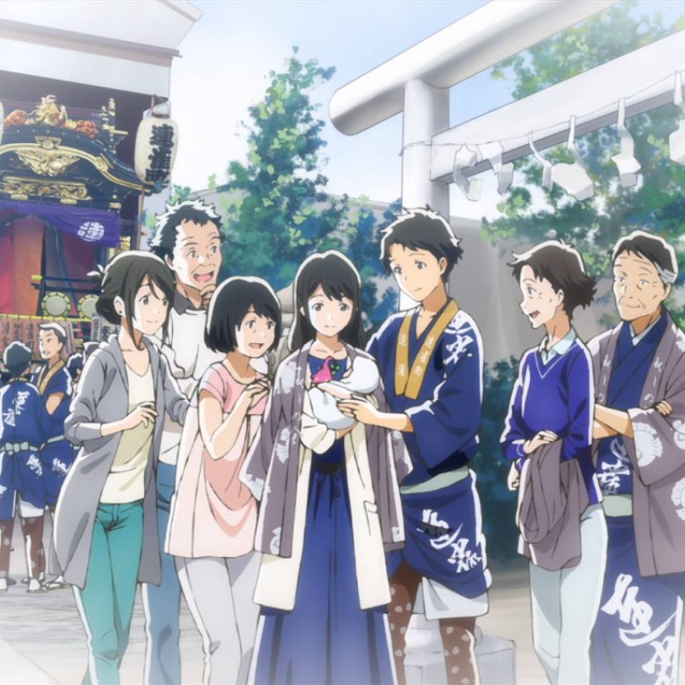

划水小分队
Menber:李毅、肖小昱、傅立新、刘鹏盛、陈泽伟
成员介绍：
陈泽伟： 加拿大奥科环境(ALCLE)技术有限公司总裁兼首席执行官。哈尔滨工业大学（市政环境工程）和加拿大滑铁卢大学（生态学）双学士， 滑铁卢大学市政环境工程博士，滑铁卢大学化学工程系博士后。 专业领域包括：饮用水处理、废水处理、湖泊富营养化治理、土壤地下水修复、环境监测等 。他曾在高新技术公司担任首席执行官，有着丰富的项目管理和产品研发管理经验。
肖小昱： 本科就读于清华大学环境科学与工程系环境工程专业，后于美国麻省州立大学Amherst分校并获得市政工程硕士学位。 现在纽约Impact Environmental Consulting 担任Quality Control Manager，主要业务涉及污染场地修复及固废处理/处置。
傅立新： 009北京航空航天大学环境工程本科毕业，2009－2011年在NYU Polytechnic School of Engineering攻读硕士学位，水资源方向。 硕士期间先后在纽约市交通局环境法规达标审计部，Wind Analytics风能评估咨询公司和纽约州环保署环境修复部门实习， 自2012年，就职于美国纽约环境咨询公司Impact Environmental从事场地调查、土壤修复固废再利用方面工作。
成员介绍：
陈泽伟： 加拿大奥科环境(ALCLE)技术有限公司总裁兼首席执行官。哈尔滨工业大学（市政环境工程）和加拿大滑铁卢大学（生态学）双学士， 滑铁卢大学市政环境工程博士，滑铁卢大学化学工程系博士后。 专业领域包括：饮用水处理、废水处理、湖泊富营养化治理、土壤地下水修复、环境监测等 。他曾在高新技术公司担任首席执行官，有着丰富的项目管理和产品研发管理经验。
肖小昱： 本科就读于清华大学环境科学与工程系环境工程专业，后于美国麻省州立大学Amherst分校并获得市政工程硕士学位。 现在纽约Impact Environmental Consulting 担任Quality Control Manager，主要业务涉及污染场地修复及固废处理/处置。
傅立新： 009北京航空航天大学环境工程本科毕业，2009－2011年在NYU Polytechnic School of Engineering攻读硕士学位，水资源方向。 硕士期间先后在纽约市交通局环境法规达标审计部，Wind Analytics风能评估咨询公司和纽约州环保署环境修复部门实习， 自2012年，就职于美国纽约环境咨询公司Impact Environmental从事场地调查、土壤修复固废再利用方面工作。
